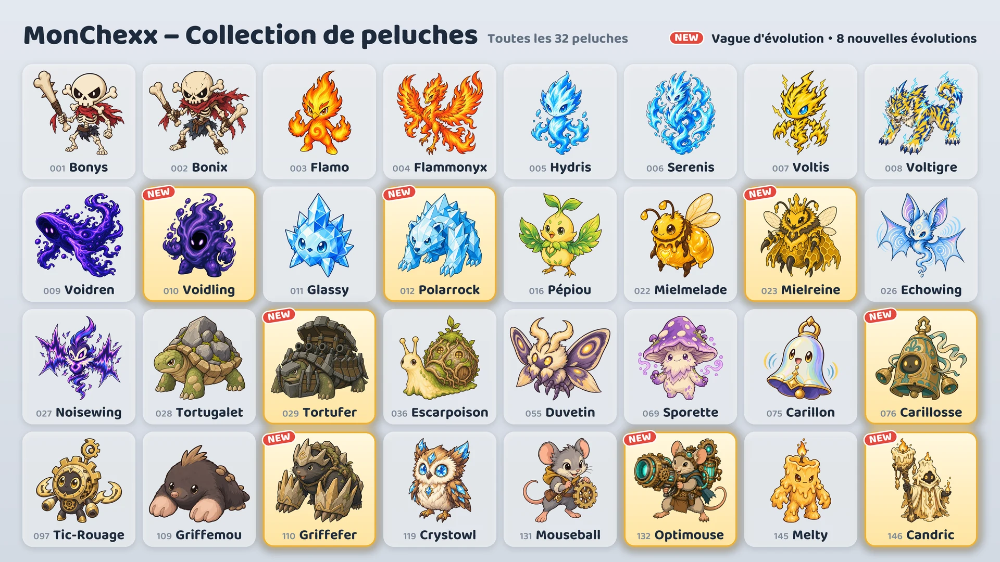

Huit nouvelles évolutions arrivent le 17 octobre.

Huit nouvelles évolutions
- Voidling : évolution de Voidren · Tank / Combattant
- Polarrock : évolution de Glassy · Tank / Combattant
- Mielreine : évolution de Mielmelade · Soutien / Tireur
- Tortufer : évolution de Tortugalet · Tank
- Carillosse : évolution de Carillon · Tank
- Griffefer : évolution de Griffemou · Tank / Assassin
- Optimouse : évolution de Mouseball · Tireur
- Candric : évolution de Melty · Soutien / Tireur
Comment les obtenir
- Machines à pince (événement) : Pendant l'événement (du 17 au 24 octobre), toutes les machines à pince, sauf les deux situées aux extrémités de la rangée, contiennent une des nouvelles évolutions avec deux autres peluches. Après l'événement, les nouvelles évolutions sont placées dans les machines dans la même proportion que les autres peluches.
- Échange de peluches : Tu peux échanger 10 doubles contre la peluche de ton choix (Échange au choix), ou 3 doubles contre une peluche au hasard (Échange au hasard).
- Packs de peluches : Les nouvelles évolutions peuvent aussi en sortir.
Utiliser les peluches évoluées
- Une peluche évoluée se collectionne séparément, et tu peux la mettre dans ton équipe dès que tu l'as.
- Dans « Crée ton équipe », sélectionne une peluche et appuie sur Base ou Évolution pour changer sa forme.
- Une équipe ne peut contenir qu'une seule peluche de chaque lignée d'évolution.
- Une peluche évoluée monte de niveau indépendamment de sa peluche de base.
Nouvelles peluches
Les valeurs exprimées « de l'attaque », « de la puissance magique » ou « des PV max » augmentent quand la peluche monte de niveau.
 Voidling · Tank/Combattant · Portée 1
Voidling · Tank/Combattant · Portée 1
- Absorption du néant : Augmente ses PV max de la somme de 200% de la puissance magique et de 3% de ses PV max au début du combat, et récupère des PV à hauteur de ce gain. Inflige ensuite à tous les ennemis dans un rayon de 1 case autour de sa position des dégâts magiques égaux à 10% de ses PV max. Quand ses PV max atteignent 3 fois ceux du début du combat, ce rayon augmente de 1 case, puis d'autant à chaque multiple supplémentaire. Les PV max gagnés sont conservés jusqu'à la fin du combat.
- Festin du néant : Gagne 10 points de mana chaque fois qu'un ennemi dans un rayon de 4 cases utilise sa compétence active.
 Polarrock · Tank/Combattant · Portée 1
Polarrock · Tank/Combattant · Portée 1
- Écrasement de givre : Inflige à la cible actuelle des dégâts physiques égaux à 240% de l'attaque et lui applique un Gel de 1,5 s. Un ennemi gelé ne peut ni agir ni gagner de mana. Inflige aux ennemis dans un cône qui s'étend sur 2 cases derrière la cible des dégâts physiques égaux à 180% de l'attaque et leur applique un Givre de 6 s qui réduit leur vitesse d'attaque de 15%.
- Peau de cristal : Réduit de 20% les dégâts magiques subis. S'applique aussi aux dégâts magiques sur la durée et se calcule après la résistance magique.
 Mielreine · Soutien/Tireur · Portée 3
Mielreine · Soutien/Tireur · Portée 3
- Gelée royale : Soigne toutes ses abeilles ouvrières à hauteur de 10% de leurs PV max et augmente leur vitesse d'attaque de 200% pendant 3 s. Ensuite, si ses abeilles ouvrières sont moins nombreuses que le maximum, en invoque 1 de plus sur les cases vides voisines.
- Essaim d'ouvrières : Commande des abeilles ouvrières, 3 au maximum. Leurs statistiques augmentent avec le niveau de Mielreine, et les effets qui visent un nombre limité d'alliés ne les choisissent jamais. Chaque seconde, les abeilles subissent des dégâts magiques égaux à 4% de leurs PV max. Quand Mielreine tombe K.O., ses abeilles entrent en furie : les dégâts qu'elles infligent et qu'elles subissent sont multipliés par 2.
- PV des abeilles 60 · Attaque des abeilles 40 (Lv.1)
 Tortufer · Tank · Portée 1
Tortufer · Tank · Portée 1
- Canonnade tournante : Tire au canon 6 fois en commençant droit devant, puis en tournant d'une direction à chaque tir dans le sens inverse des aiguilles d'une montre. Chaque obus touche le premier ennemi situé dans sa direction à 2 cases au maximum et lui inflige des dégâts physiques égaux à 500% de l'attaque. Les obus partent à 0,5 s d'intervalle, et cet intervalle varie avec la vitesse d'attaque. Ne se déplace pas pendant les tirs ; en cas d'Étourdissement ou de Gel, les obus restants ne sont pas tirés. Ne gagne pas de mana avant la fin des tirs.
- Carapace-forteresse : Pour chaque ennemi dans un rayon de 1 case autour de sa position, son armure et sa résistance magique augmentent de 35.
 Carillosse · Tank · Portée 1
Carillosse · Tank · Portée 1
- Coup de cloche : Se confère un bouclier égal à 300% de la puissance magique et provoque tous les ennemis dans un rayon de 2 cases autour de sa position, les deux pendant 2 s. Pendant ce temps, les ennemis provoqués n'attaquent que cette peluche et ne peuvent pas lancer de nouvelle compétence. Pendant la même durée, chaque fois qu'une attaque de base ennemie la touche, inflige à tous les ennemis dans un rayon de 2 cases autour de sa position des dégâts magiques égaux à 25% des dégâts de cette attaque avant réduction par l'armure et les boucliers. Ne gagne pas de mana avant la fin de la Provocation.
- Résonance : Chaque fois qu'un autre allié dans un rayon de 2 cases autour de sa position utilise sa compétence active, récupère des PV à hauteur de 50% de la puissance magique.
 Griffefer · Tank/Assassin · Portée 1
Griffefer · Tank/Assassin · Portée 1
- Assaut souterrain : S'enfouit en retirant tous ses affaiblissements, se déplace à 3 fois sa vitesse de déplacement jusqu'à la case vide ayant le plus d'ennemis dans un rayon de 1 case autour d'elle, puis inflige à tous les ennemis dans un rayon de 1 case autour de sa position des dégâts physiques égaux à 500% de l'attaque. Les attaques ne l'atteignent pas pendant son déplacement sous terre.
- Griffes de pierre : Son armure augmente d'une valeur égale à 20% de son attaque.
- Commence le combat avec 0 point de mana.
 Optimouse · Tireur · Portée 4
Optimouse · Tireur · Portée 4
- Canon laser : Charge son canon laser pendant 1,5 s en direction de la cible actuelle dans un rayon de 4 cases, puis tire jusqu'au bord du terrain un laser large de 1 case qui inflige à tous les ennemis touchés des dégâts magiques égaux à 1000% de l'attaque. La direction est fixée au début de la charge ; en cas d'Étourdissement ou de Gel pendant la charge, le tir est annulé.
- Circuit de chauffe : Chaque attaque de base augmente sa vitesse d'attaque de 20%, sans limite ; l'utilisation de sa compétence active le réinitialise.
 Candric · Soutien/Tireur · Portée 3
Candric · Soutien/Tireur · Portée 3
- Flamme éternelle : Pose pendant 5 s une marque sur l'autre allié ayant le moins de PV actuels. Cette peluche confère aussi à l'allié marqué un bouclier égal à 200% de sa propre puissance magique pendant la même durée. Si des dégâts directs devaient mettre l'allié marqué K.O., cette peluche subit à sa place 200% de ces dégâts, et l'allié n'en subit aucun. Une seule marque est active à la fois, et elle n'empêche pas un K.O. causé par des dégâts sur la durée.
- Cire fondante : Les dégâts directs subis qui restent après les boucliers sont retirés de ses PV petit à petit, étalés sur 4 s. Les dégâts sur la durée sont subis immédiatement.
Matchs classés et badges
- Les adversaires des matchs classés utilisent aussi les nouvelles évolutions.
- Les huit nouvelles évolutions ne comptent pas pour le badge « Collection Saison 1 ».
- Le badge « As de l'évolution » s'obtient en possédant 5 peluches évoluées différentes. Il existe désormais 13 peluches évoluées.
Les changements d'équilibrage de toutes les peluches sont détaillés dans les notes de mise à jour « Équilibrage et système de combat ».